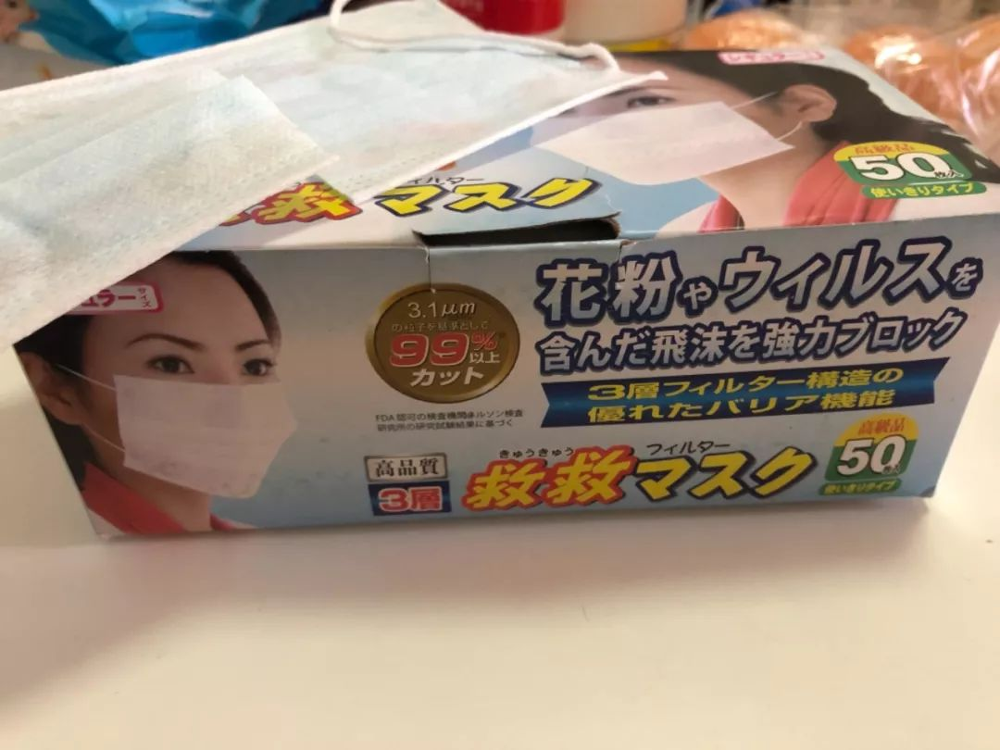
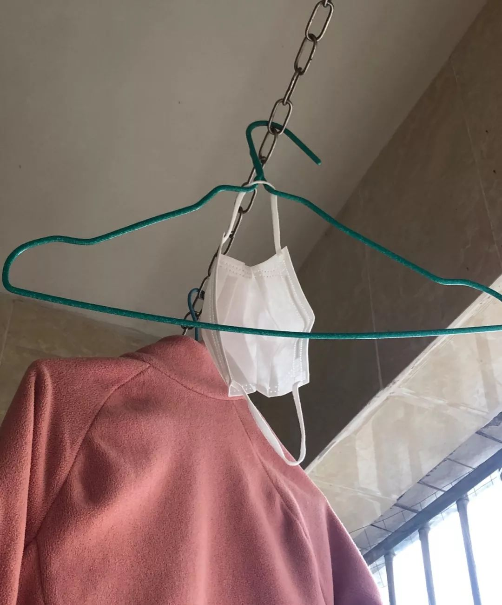

危难时刻你们怎么还关在象牙塔里丨单读
原文链接 备份链接 在武汉一线奔波的外卖员张赛继续向单读发来他的近况。疫情形势依旧严峻，对病毒的认识也众说纷纭，这既让他紧张，也让他感到困惑——为什么学者不走出理论，多说说社会上的事，为什么医生不多写写科普文章，录几段视频，接受采访也 …


导语 ：新冠肺炎的防疫战进展牵动着所有人的心，2020这个开年可谓惊心动魄。过年不串门，不逛街，假期从1月31日延长到2月3日到2月10日，每天我们忙着接收大量信息、求证、转发呼吁、联系互助，相信每个人都过了有生以来最难忘的一个春节假期。
每天都处在爆炸的信息量和让人心碎难过的故事中，我们感到我们必须要通过写作/写日记来帮助消化我们自己的情绪。在每个猛刷微博和朋友圈、因24小时不断涌现的进展而愤怒伤心焦虑到难以入睡的深夜，我们尝试用零碎的文字记录当下。
我们想，这些文字也是很重要的。这些天恐怕我们也都懂得了记录和分享的重要性。所以即日起，新媒体女性开启了“普通女人时疫记”栏目，接收一切关于个人疫情故事的投稿。今天我们分享来自西瓜的日记，她人在广州，因为买到了假口罩，现在真不知道该如何在假期结束后在中央空调写字楼里保护自己………
**作者 / 西瓜
**
编辑 / 朴西
首发 / 新媒体女性
▼ “晴天霹雳，买到假罩”
气死我了 ，买到了假口罩。
，买到了假口罩。
口罩是1月23日武汉封城当天在我的坚持下我爸去买的。那时候，乡镇小地方的药房还有点存货。不过据我爸说他去买的时候门口正在涌入大量人群，估计是听到武汉封城消息赶来的，我爸赶紧让店员给他拿两盒。
然而2月3号早上起来，我看到有人转了“三甲传真”公号的文章《曝光！这些国内外口罩全是假货！请转发提醒所有人！》揭露哪些是假口罩。我一看，我的老天爷，爸爸给我们买的两盒赫然在列。我立马跟弟弟说了这个消息，大家都是心里一沉。我试着剪开了一个口罩看看，发现虽然是三层口罩，但材质单薄，手指放到底下上面能看见。这假口罩相比别的买到的医用口罩和另一个日本口罩薄很多，估计孔径也很大挡不住飞沫的。

（让我心里拨凉的假口罩）
▼ “没了口罩，怎么上班”
原本我指望着这50个口罩上班，现在一下子手里也没有口罩了，心情很焦虑 。和弟弟想了很多办法：例如专家称，如果是去人少的地方或者空旷的地方，可以回家后挂在阳台晾几个小时，重复利用一下；例如多戴两层；例如可能有什么消毒口罩的方法.各种信息难辨真假，头昏脑胀但又着急……和弟弟互相安慰，弟弟说，总比不戴好。微博上媒体采访各种专家也是说，只要是口罩就有用。我和弟弟默契地没有把这件事告诉在老家的爸妈让他们担心。他们也没有多余口罩。
。和弟弟想了很多办法：例如专家称，如果是去人少的地方或者空旷的地方，可以回家后挂在阳台晾几个小时，重复利用一下；例如多戴两层；例如可能有什么消毒口罩的方法.各种信息难辨真假，头昏脑胀但又着急……和弟弟互相安慰，弟弟说，总比不戴好。微博上媒体采访各种专家也是说，只要是口罩就有用。我和弟弟默契地没有把这件事告诉在老家的爸妈让他们担心。他们也没有多余口罩。
这些天陆续看了一些科普，我基本不担心户外的防护，假口罩也勉强用得。我担心的是之后上班要坐地铁，那种人群密集的空间是肯定要加强防护的。也不知道多少人到手的口罩是和我的一样是假口罩，甚至买不到口罩。
广州现在每晚八点可以通过穗康小程序预约五个口罩。但抢了三天了，也是没能抢到，不过还是得继续每天抢的，不然可咋办（摊手）。辗转托朋友埃及（？）代购买到了一些口罩，但是也不知道什么时候才能到手。
2月3号下楼买菜的时候，看到菜市场门口贴着进入菜市场必须要戴口罩的告示。我进去后发现，比起年初五只有一家卖青菜的和一家卖肉的，这天已经有两家卖肉的和好几家卖菜的。买了青菜后我想买点牛肉丸，于是向肉店走去，走近了之后才发现肉店小哥居然没戴口罩！但向来脸皮薄很怕尴尬的我不好意思不买，于是硬着头皮和他买了半斤牛肉丸。后来想到他可能也是买不到口罩，心里也多了一点理解。
▼ “一罩难求，略感凄凉”
2月4日早上在朋友圈看到科普各类口罩该在什么场合下使用的文章，心里一下子也忍不住有些火气。现在哪还有那种条件？现在是一个口罩也买不到了 ….去了各大论坛社交媒体小组转一圈，发现大家也都是用着假口罩。甚至连假的也不太舍得用，让我有种苦中作乐的好笑感。
….去了各大论坛社交媒体小组转一圈，发现大家也都是用着假口罩。甚至连假的也不太舍得用，让我有种苦中作乐的好笑感。
虽然之前也被科普过勤洗手比戴口罩重要很多，但还是少数声音，到了4号这天，终于这类科普多了起来，不知道是不是因为大家都买不到口罩了……我依照科普，下楼取快递买菜用的口罩回来后和外出的衣服一起挂起来晾晒，由于场景看起来有一丝凄凉，我拍照留存了一下。

（有点凄凉）
又想起前几天不知道哪里看的科普还是说可以用酒精消毒口罩，于是那天我给用过的口罩喷了酒精后晾晒再用。4号再看的新科普已经否认了这个做法，提醒大家只能晾晒，不能用别的任何消毒液喷一次性口罩。网上也有很多关于口罩消毒的搞笑图片，大家继续苦中作乐。

（网友们的苦中作乐）
科普说戴口罩没有之前说的那么重要，但手上没几个口罩还是让我很焦虑。特别是要上班的写字楼是中央空调且窗户不能打开，也让我觉得上班后必须得一直戴着口罩。焦虑中我研究起了买棉口罩+劳保用kn95/kn90滤芯替换的实操性……
这段时间和朋友们交流，聊天主题总有口罩。我们不仅要为自己张罗口罩，还要为家人筹点口罩，还要担忧着防疫前线的医生护士们都没有口罩和防护服和防护镜的事情。为口罩发愁的日子什么时候才会结束呢？
_*“普通女人时疫记”即日起开放接收投稿，如果你也有想要分享的故事，欢迎在公众号后台私信我们，或到_新浪微博@新媒体女性 给我们私信留言。故事一经采用，将有微薄稿酬奉上。让我们保持观察与记录，共克时艰。
本文为新媒体女性原创稿件，未经授权请勿转载
原文链接 备份链接 在武汉一线奔波的外卖员张赛继续向单读发来他的近况。疫情形势依旧严峻，对病毒的认识也众说纷纭，这既让他紧张，也让他感到困惑——为什么学者不走出理论，多说说社会上的事，为什么医生不多写写科普文章，录几段视频，接受采访也 …
原文链接 备份链接 大家好，我是田静。 按照规定，今天已经是春节后第三个工作日了，我依旧待在家里处理工作。我以为很多人会和我一样，但事实却是：很多人冒着风险走出家门，回到自己的工作岗位。 离疫情中心千里远中越边境，张扬过了四个关卡才回到单 …
原文链接 备份链接 今天是2月2日，月相为53%的上弦月。 It is February 2 with a 53 percent of First Quarter. 距离满月还有 7 天。 There are 7 days until …
原文链接 备份链接 2020.2.1 二月到了，这才过了一个月，就觉得跌宕起伏的剧情仿佛过了一整年，接下来若还有惊世大片，心理素质怕是练出来了。 今天起风了，明后天预报有雨，小区里的住户赶着晒被子，健身器材上铺满花花绿绿的棉被毛毯。楼下贴 …
原文链接 备份链接 新冠肺炎疫情暴发以来，这里成为保证防疫一线的大后方，整个春节期间，企业复工，女工们赶制口罩，不分昼夜，供给“前线”。 全文4827字，阅读约需10分钟 争分夺秒，夜以继日。 口罩机24小时不停转，女工白天黑夜两班倒， …